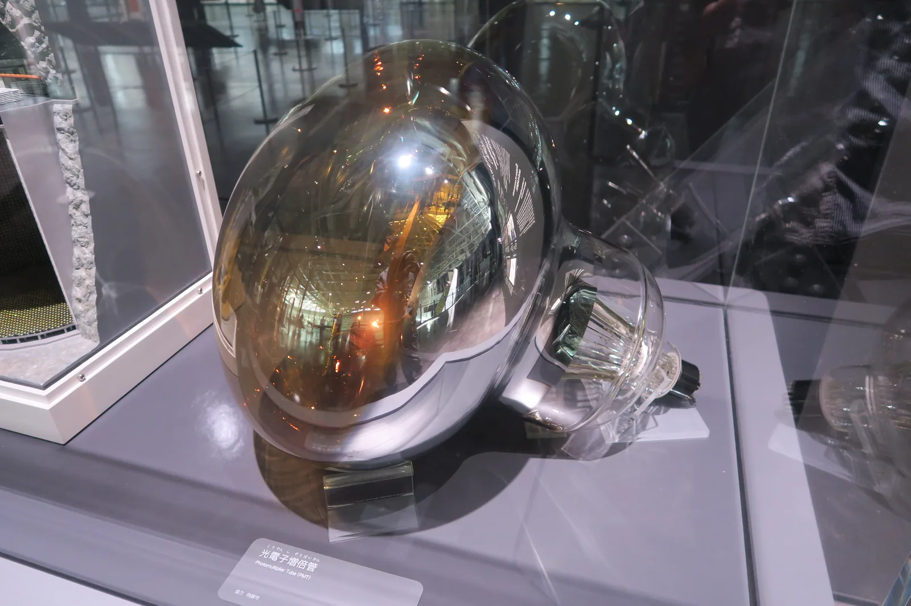

The photoelectric effect and the photon
Why does even weak short-wavelength ultraviolet light release electrons from a zinc plate, while bright red light does not release a single one?
Prior knowledge
- The speed, frequency and wavelength of a wave are related by the equation $v = f\lambda$chapter How waves form and travel
- The kinetic energy of a moving object is $E_\text{k} = \tfrac{1}{2} m v^2$chapter Kinetic energy, potential energy and mechanical energy
- Energy is conserved when it changes from one form to anotherchapter Forms of energy and conservation of energy
Core path: follow the steps in order. Besides calculations, the core path includes investigations, explanations and graphs. Tasks marked Optional give extra practice. Optional tasks: 4.
Think about it
A zinc plate is attached to an electroscope and charged negative, so the leaves of the electroscope are apart. When the teacher illuminates the plate in shielded apparatus with a small lamp that emits short-wavelength ultraviolet radiation (UV-C), the leaves drop within seconds: the plate loses electrons. When a bright red lamp that radiates many times more light power is placed in front of the same plate, the leaves stay apart even if the illumination continues for an hour.
Why does weak UV-C radiation release electrons while strong red light does not, and what does this tell us about the energy of light?
Optional Review: frequency and wavelength
Predict
Make your predictions before investigating 2 questions
Prediction 1: brighter red light
Prediction 2: double intensity
Investigate
Simulation
How to use
Energies are in electronvolts ($\text{eV}$). It is a convenient unit for the small energies of photons and electrons: $1\,\text{eV} = 1.602 \cdot 10^{-19}\,\text{J}$. Adjust the wavelength $\lambda$ and the intensity of the light and choose the metal. The lamp sends photons as wavy arrows whose colour is the colour of the light; ultraviolet, which the eye cannot see, is drawn in violet. The blue dots are released electrons. On the right (below on a phone) the energies are to scale: the left bar is the energy of one photon $hf$, the right one is the work function $W$ of the electron, and on top of it is the maximum kinetic energy $E_\text{k,max}$. The readouts show the frequency, the photon energy, the work function, the maximum kinetic energy and the number of electrons released per second in the picture. Speed changes only the pace of the motion in the picture, not the readouts.
Assumptions of the model
Light arrives as photons whose energy is $E = hf$. One photon gives all of its energy to one electron; the electron does not collect energy from several photons. In the model every photon with enough energy releases an electron, but in reality only a small fraction of the photons release an electron, and far more electrons are released, by a factor of billions, than in the picture. The kinetic energies of the released electrons vary, because some lose energy on their way to the surface of the metal; the readout shows the maximum. The work functions are typical table values: the cleanliness of a real surface changes them. The intensity of the model is the number of photons per second; in real light of the same power there are fewer photons at a short wavelength, because each photon carries more energy. The readouts are values calculated by the model. The results of the model correspond to what was measured in the experiments of the early 1900s.
How the calculation works
The frequency of a photon is $f = \tfrac{c}{\lambda}$ and its energy is $E = hf = \tfrac{hc}{\lambda}$, where $h = 6.626 \cdot 10^{-34}\,\text{J}\,\text{s}$ and $c = 2.998 \cdot 10^8\,\text{m/s}$. The energy in electronvolts is obtained by dividing by $1.602 \cdot 10^{-19}\,\tfrac{\text{J}}{\text{eV}}$. If $E \geq W$, the maximum kinetic energy is $E_\text{k,max} = E - W$, otherwise no electrons are released. In the picture $0.4$ photons arrive per second for each percentage point of intensity, so at an intensity of $50\,\%$ there are $20$ per second.
Illuminate a metal plate with different wavelengths and intensities. Observe whether electrons are released, how many, and with how much energy.
Experiment 1: red light, only the intensity changes
Test prediction 1. A sodium plate is illuminated with red light, $\lambda = 650\,\text{nm}$; change only the intensity. Record the readouts at at least two intensities, for example $20\,\%$ and $100\,\%$. Are electrons released at any intensity?
Initial state: wavelength = $650\,\text{nm}$, intensity = $20\,\%$, metal: sodium. Kept constant: wavelength, metal. Varied: intensity.
| intensity | $E$ $(\text{eV})$ | $E_\text{k,max}$ $(\text{eV})$ | $n$ $(1/\text{s})$ |
|---|
More to investigate 3 tasks
Experiment 2: violet light, only the intensity changes
Test prediction 2. A sodium plate is illuminated with violet light, $\lambda = 405\,\text{nm}$; change only the intensity. Record the readouts at least at the intensities $20\,\%$ and $40\,\%$, preferably also $100\,\%$. How do the number of electrons and the maximum kinetic energy change?
Initial state: wavelength = $405\,\text{nm}$, intensity = $20\,\%$, metal: sodium. Kept constant: wavelength, metal. Varied: intensity.
| intensity | $E$ $(\text{eV})$ | $E_\text{k,max}$ $(\text{eV})$ | $n$ $(1/\text{s})$ |
|---|
Experiment 3: only the wavelength changes
First guess: does the maximum kinetic energy increase or decrease when the wavelength gets shorter, that is when the frequency increases? The intensity is now $50\,\%$, so in the model the same number of photons arrives each second at every wavelength; change only the wavelength. Record the readouts at at least the wavelengths $300\,\text{nm}$, $400\,\text{nm}$ and $500\,\text{nm}$. Then find the wavelength at which the release of electrons stops, and record the readouts on both sides of it. Compare how much the photon energy and the maximum kinetic energy change between the measurements.
Initial state: wavelength = $300\,\text{nm}$, intensity = $50\,\%$, metal: sodium. Kept constant: intensity, metal. Varied: wavelength.
| wavelength | $E$ $(\text{eV})$ | $E_\text{k,max}$ $(\text{eV})$ | $n$ $(1/\text{s})$ |
|---|
Read from your table the longest wavelength at which electrons are still released from sodium. Check the estimate by calculating it from the work function of sodium, $W = 2.28\,\text{eV}$ (use $h = 6.626 \cdot 10^{-34}\,\text{J}\,\text{s}$, $c = 2.998 \cdot 10^8\,\text{m/s}$ and $1\,\text{eV} = 1.602 \cdot 10^{-19}\,\text{J}$). Give the answer in nanometres.
Hint 1: a guiding question
Electrons are just barely released when the energy of one photon is equal to the work function.
Hint 2: what is the connection
Solve the wavelength $\lambda_0$ from the equation $\tfrac{hc}{\lambda_0} = W$. Convert $W$ to joules first.
Hint 3: an intermediate step
so $\lambda_0 = \tfrac{hc}{W}$.
Show the solution
Given
work function of sodium $W = 2.28\,\text{eV}$, $h = 6.626 \cdot 10^{-34}\,\text{J}\,\text{s}$, $c = 2.998 \cdot 10^8\,\text{m/s}$, $1\,\text{eV} = 1.602 \cdot 10^{-19}\,\text{J}$; from the table: at a wavelength of $540\,\text{nm}$ electrons are released, at $545\,\text{nm}$ they are not
Find
the longest wavelength that releases electrons, that is the threshold wavelength $\lambda_0$, in nanometres
Principle
One photon gives its energy to one electron, so an electron is just barely released when the photon energy is exactly equal to the work function. At longer wavelengths the photon energy is smaller than $W$.
Reading the table
In the table the maximum kinetic energy decreases as the wavelength grows, and at $540\,\text{nm}$ it is only about $0.02\,\text{eV}$; at $545\,\text{nm}$ no electrons are released. The limit is therefore between these, at about $544\,\text{nm}$.
Formula
$\dfrac{hc}{\lambda_0} = W$, so $\lambda_0 = \dfrac{hc}{W}$
Conversions
the result from metres to nanometres, $1\,\text{m} = 10^{9}\,\text{nm}$
Substitution
The numerator is
so
Answer
$544\,\text{nm}$
Three significant figures like the work function $2.28\,\text{eV}$.
Reasonableness
The calculated value is between the table limits $540\,\text{nm}$ and $545\,\text{nm}$. With round numbers $1240\,\text{eV}\,\text{nm} : 2.28\,\text{eV} \approx 544\,\text{nm}$. This is green light, so red and yellow light do not release electrons from sodium, as was seen with red light in experiment 1.
Conclusion: what decides the release?
On the basis of your tables, write: what did the intensity change and what did it not change? How did the maximum kinetic energy change with the photon energy? Why did red light not release electrons from sodium at any intensity?
Model answer
With red light, $650\,\text{nm}$, no electrons were released at any intensity: the photon energy was $1.91\,\text{eV}$ every time, smaller than the work function of sodium, $2.28\,\text{eV}$. With violet light, doubling the intensity doubled the number of electrons, for example from $8$ to $16$ per second, but the maximum kinetic energy stayed at $0.78\,\text{eV}$. When the wavelength got shorter from $500\,\text{nm}$ to $400\,\text{nm}$, the photon energy grew from $2.48\,\text{eV}$ to $3.10\,\text{eV}$ and the maximum kinetic energy by the same amount, from $0.20\,\text{eV}$ to $0.82\,\text{eV}$; the difference $W = 2.28\,\text{eV}$ stayed the same. The release stopped at about $544\,\text{nm}$. Explanation: one photon gives its energy to one electron, so the photon energy decides whether an electron is released and how great its kinetic energy can be, and the intensity decides only the number of photons and therefore of electrons. The values are calculated by the model.
Assess your own answer
Tick the points your own answer already contains.
Theory
Key idea
Light releases electrons from a metal
When a negatively charged zinc plate is illuminated with ultraviolet radiation of short enough wavelength, the plate quickly loses its charge: the radiation releases electrons from the surface of the plate. This phenomenon is called the photoelectric effect. A metal contains many electrons that move freely inside it but cannot leave through its surface on their own. The smallest energy needed to release an electron from a metal is called the work function $W$. It depends on the metal: for sodium it is about $2.3\,\text{eV}$ and for zinc about $4.3\,\text{eV}$. The unit electronvolt is introduced at the end of this chapter.
The wave model does not explain the observations
Light is electromagnetic wave motion, and the intensity of a wave tells how much energy it brings to a surface each second. According to the wave model, brighter light should therefore release electrons more easily and give them more kinetic energy, whatever the colour. With dim light, an electron should collect energy for some time before it is released. Experiments in the early 1900s, in which the number and kinetic energy of the released electrons were measured carefully, gave a completely different result:
- Threshold. According to the wave model, any light would release electrons if it were bright enough. In experiments no electrons are released at all if the frequency of the light is too low, however bright the light is.
- Delay. According to the wave model, with dim light the release would start after a delay. In experiments electrons are released immediately when the light hits the plate, even with dim light.
- Intensity. According to the wave model, brighter light would give the electrons more kinetic energy. In experiments brighter light releases more electrons, but their maximum kinetic energy stays the same.
- Frequency. In experiments the maximum kinetic energy of the electrons grows as the frequency of the light grows. In the wave model the frequency has no such role.
The photon: a quantum of light energy
Albert Einstein explained the observations in 1905. The energy of light is not spread evenly over a wave, but is packed into separate portions, or quanta. A quantum of light is called a photon. The energy of one photon is $E = hf$, where $f$ is the frequency of the light and $h$ is the Planck constant. A photon gives all of its energy to one electron at once, and in ordinary light an electron does not have time to collect energy from several photons. If $hf < W$, the electron is not released, however many photons arrive. If $hf > W$, the electron is released and the excess energy remains with it as kinetic energy.
With this model every observation is explained. For light of one colour, the intensity tells how many photons hit the surface each second: brighter light therefore releases more electrons, but a single electron still receives only the energy of one photon. The frequency determines the energy of one photon and therefore the maximum kinetic energy of the electron. There is no delay, because already the first photon with enough energy can release an electron. In this model energy is quantised: radiation and matter exchange energy only in whole photon energies.

The electronvolt
The energies of photons and electrons are very small numbers in joules, so they are often given in the unit electronvolt ($\text{eV}$). One electronvolt is the energy an electron gains when it is accelerated in an electric field through a voltage of $1\,\text{V}$. Since the magnitude of the charge of the electron is $e = 1.602 \cdot 10^{-19}\,\text{C}$, we have $1\,\text{eV} = 1.602 \cdot 10^{-19}\,\text{C} \cdot 1\,\text{V} = 1.602 \cdot 10^{-19}\,\text{J}$. The conversion is done by substitution: for example $3.20 \cdot 10^{-19}\,\text{J} = \tfrac{3.20 \cdot 10^{-19}}{1.602 \cdot 10^{-19}}\,\text{eV} \approx 2.00\,\text{eV}$.
Photon energy
Frequency and wavelength
The energy of a photon of radiation with frequency $f$ is
$$E = hf$$
where $E$ is the photon energy ($\text{J}$), $h = 6.626 \cdot 10^{-34}\,\text{J}\,\text{s}$ is the Planck constant and $f$ is the frequency of the radiation ($\text{Hz}$). Electromagnetic radiation travels in a vacuum at the speed of light $c = 2.998 \cdot 10^8\,\text{m/s}$, and the basic equation of wave motion gives $c = f\lambda$. Substituting $f = \tfrac{c}{\lambda}$ gives
$$E = \frac{hc}{\lambda}$$
where $\lambda$ is the wavelength of the radiation in a vacuum ($\text{m}$). The shorter the wavelength, the greater the photon energy. For example, the photon energy of green light, $\lambda = 500\,\text{nm}$, is $E = \tfrac{6.626 \cdot 10^{-34}\,\text{J}\,\text{s} \cdot 2.998 \cdot 10^8\,\text{m/s}}{500 \cdot 10^{-9}\,\text{m}} = 3.97 \cdot 10^{-19}\,\text{J}$, or $2.48\,\text{eV}$. For estimates it is worth converting the product $hc$ once into electronvolts and nanometres. Since $1\,\text{eV} = 1.602 \cdot 10^{-19}\,\text{J}$ and $1\,\text{m} = 10^{9}\,\text{nm}$, the product is
$$\begin{aligned} hc &= 1.986 \cdot 10^{-25}\,\text{J}\,\text{m} \\ &= \tfrac{1.986 \cdot 10^{-25}}{1.602 \cdot 10^{-19}}\,\text{eV}\,\text{m} \\ &\approx 1.240 \cdot 10^{-6}\,\text{eV}\,\text{m} \\ &= 1240\,\text{eV}\,\text{nm} \end{aligned}$$
With it you get a quick estimate: the energy of a $500\,\text{nm}$ photon is about $1240\,\text{eV}\,\text{nm} : 500\,\text{nm} \approx 2.5\,\text{eV}$.
The photoelectric equation
When a photon releases an electron, its energy is used for the work function, and the rest remains as the kinetic energy of the electron. Conservation of energy gives Einstein's photoelectric equation
$$hf = W + E_\text{k,max}$$
where $hf$ is the photon energy, $W$ is the work function of the metal and $E_\text{k,max}$ is the maximum possible kinetic energy of the released electron. The kinetic energy is the maximum because an electron released from deeper in the metal loses part of its energy on the way to the surface, and its kinetic energy is then smaller. Electrons are released only if $hf \geq W$. The smallest frequency that releases electrons is the threshold frequency $f_0 = \tfrac{W}{h}$, and the corresponding longest wavelength that releases electrons is $\lambda_0 = \tfrac{hc}{W}$. For sodium $\lambda_0 \approx 544\,\text{nm}$, which is in the middle of green light. Red, yellow and yellowish-green light therefore do not release electrons from sodium, but blue-green, blue and violet light do.
When the equation is written in the form $E_\text{k,max} = hf - W$, it is the equation of a straight line: the maximum kinetic energy grows steadily with the frequency, and the slope of the line is the Planck constant $h$ for all metals. The lines of different metals are therefore parallel, and each starts on the horizontal axis at the threshold frequency of its metal. Robert Millikan measured such lines in 1916 and obtained the Planck constant from the slope. The intensity of the light does not appear in the equation at all.
Zinc needs short-wavelength ultraviolet
The threshold frequency corresponds to the threshold wavelength $\lambda_0 = hc : W$: radiation of longer wavelength does not release electrons. Electrons are released from zinc only if the photon energy of the radiation exceeds the work function of zinc. With the work function $4.31\,\text{eV}$ the threshold wavelength is $\lambda_0 \approx 1240\,\text{eV}\,\text{nm} : 4.31\,\text{eV} \approx 288\,\text{nm}$. For example, an ordinary $365\,\text{nm}$ UV-A lamp is therefore not enough, but ultraviolet radiation of short enough wavelength, such as $254\,\text{nm}$ UV-C, can release electrons. The experiment works best with a freshly polished zinc surface, because an oxide layer and dirt on the surface weaken the effect.
UV-C radiation damages the eyes and skin even in a short exposure. At school the experiment is not done with an unshielded UV-C lamp: it is done as a teacher demonstration with shielded apparatus, or studied with a simulation and ready-made measurement data.
Common misconception
Many people think that brighter light gives the electrons more energy, because bright light brings more energy to the surface. Brighter light does bring more photons, however, not more energetic photons. One electron always receives the energy of one photon, so brighter light increases the number of released electrons but not their maximum kinetic energy. This is why even bright red light does not release electrons from zinc: the energy of every red photon remains smaller than the work function.
Another mistake is to think that a photon is a small "ball" of light with a definite position and size, and that light is therefore either a wave or a collection of particles. In the photoelectric effect the transfer of the energy of light shows up in quanta, but for example the interference of light is explained by the wave model. We return to the dual nature of light in the chapter Light and electrons as waves and particles.
Summary
- In the photoelectric effect, light releases electrons from the surface of a metal. The smallest energy needed for the release is the work function $W$ of the metal. Zinc needs ultraviolet radiation with a wavelength below about $288\,\text{nm}$.
- The energy of light is quantised into photons. The photon energy is $E = hf = \tfrac{hc}{\lambda}$, where $h = 6.626 \cdot 10^{-34}\,\text{J}\,\text{s}$.
- One photon gives its energy to one electron: $hf = W + E_\text{k,max}$. Electrons are released only when $hf \geq W$, that is $f \geq f_0 = \tfrac{W}{h}$.
- The intensity of the light determines the number of released electrons, and the frequency determines their maximum kinetic energy.
- $1\,\text{eV} = 1.602 \cdot 10^{-19}\,\text{J}$.
Optional Return to your predictions
Compare your predictions with the values of the model in the experiments and with the equation $hf = W + E_\text{k,max}$. Then return to the opening question: why does weak UV-C radiation discharge a zinc plate while bright red light does not?
Would you change your prediction?
Examples
Once you have studied the chapter's theory, move on to the guided examples. In the first you follow a worked solution step by step; in the next ones you make the choices yourself, and the hints help if you get stuck.
Example 1: Violet laser on sodium
A violet laser pointer emits light with a wavelength of $405\,\text{nm}$. The light hits a sodium surface whose work function is $2.28\,\text{eV}$. What is the maximum kinetic energy of the released electrons in electronvolts?
Step 1/7
Given and asked. Wavelength $\lambda = 405\,\text{nm}$, work function $W = 2.28\,\text{eV}$, Planck constant $h = 6.626 \cdot 10^{-34}\,\text{J}\,\text{s}$, speed of light $c = 2.998 \cdot 10^8\,\text{m/s}$ and $1\,\text{eV} = 1.602 \cdot 10^{-19}\,\text{J}$. The maximum kinetic energy $E_\text{k,max}$ is asked.
Step 2/7
Principle. One photon gives all of its energy to one electron. Energy is conserved: of the photon energy, the work function $W$ is used to release the electron, and the rest remains as kinetic energy. The photoelectric equation holds because the photon energy is enough for the release (this is checked from the result).
Step 3/7
Formula solved. The photoelectric equation is solved for $E_\text{k,max}$, and the photon energy is expressed using the wavelength:
$$E_\text{k,max} = \frac{hc}{\lambda} - W$$
Step 4/7
Unit conversions. The wavelength in metres,
and the work function in joules by substituting $1\,\text{eV} = 1.602 \cdot 10^{-19}\,\text{J}$:
Step 5/7
Substitution. $$\begin{aligned} &E_\text{k,max} = \frac{hc}{\lambda} - W \\ &= \frac{6.626 \cdot 10^{-34}\,\text{J}\,\text{s} \cdot 2.998 \cdot 10^8\,\tfrac{\text{m}}{\text{s}}}{405 \cdot 10^{-9}\,\text{m}} \\ &\quad - 3.653 \cdot 10^{-19}\,\text{J} \\ &= 4.905 \cdot 10^{-19}\,\text{J} - 3.653 \cdot 10^{-19}\,\text{J} \\ &= 1.252 \cdot 10^{-19}\,\text{J} \\ &= \frac{1.252 \cdot 10^{-19}}{1.602 \cdot 10^{-19}}\,\text{eV} \\ &= 0.782\,\text{eV} \end{aligned}$$
Step 6/7
Answer. The maximum kinetic energy of the released electrons is $0.78\,\text{eV}$. The result is given to two decimal places because it is the difference of two almost equal energies and the work function $2.28\,\text{eV}$ is given to the nearest hundredth.
Step 7/7
Reasonableness. The photon energy is $3.06\,\text{eV}$, which is greater than the work function $2.28\,\text{eV}$, so electrons really are released. The kinetic energy is positive and smaller than the photon energy, as it should be. An estimate with round numbers:
$3.1\,\text{eV} - 2.3\,\text{eV} = 0.8\,\text{eV}$.
Optional Example 2: Find the mistake
Example 3: Apply to a new situation
A photomultiplier tube detects very weak light: the light releases electrons from its cathode, and the tube amplifies their current so that it can be measured. The work function of the cathode of one tube is $1.90\,\text{eV}$.
What is the longest wavelength of light that the tube can detect? Use the values $h = 6.626 \cdot 10^{-34}\,\text{J}\,\text{s}$, $c = 2.998 \cdot 10^8\,\text{m/s}$ and $1\,\text{eV} = 1.602 \cdot 10^{-19}\,\text{J}$. Give the answer in nanometres.
Hint 1: a guiding question
The tube detects light only if one photon can release an electron. What condition for the photon energy follows from this?
Hint 2: what is the connection
At the longest detectable wavelength the photon energy is exactly the work function: $\tfrac{hc}{\lambda_0} = W$.
Hint 3: an intermediate step
and $\lambda_0 = \tfrac{hc}{W}$. Finally convert metres to nanometres.
Show the solution
Given
work function of the cathode $W = 1.90\,\text{eV}$, $h = 6.626 \cdot 10^{-34}\,\text{J}\,\text{s}$, $c = 2.998 \cdot 10^8\,\text{m/s}$, $1\,\text{eV} = 1.602 \cdot 10^{-19}\,\text{J}$
Find
the longest detectable wavelength, that is the threshold wavelength $\lambda_0$, in nanometres
Principle
The tube detects light only when the light releases electrons from the cathode (the photoelectric effect). One photon gives its energy to one electron, so the photon energy must be at least equal to the work function. The weakness of the light is no problem, because already one photon with enough energy releases an electron; at long wavelengths the photon energy is not enough.
Formula
$\dfrac{hc}{\lambda_0} = W$, so $\lambda_0 = \dfrac{hc}{W}$
Conversions
the result from metres to nanometres, $1\,\text{m} = 10^{9}\,\text{nm}$
Substitution
Answer
$653\,\text{nm}$
Three significant figures like the work function $1.90\,\text{eV}$.
Reasonableness
With round numbers $1240\,\text{eV}\,\text{nm} : 1.90\,\text{eV} \approx 653\,\text{nm}$. The work function is smaller than that of sodium, $2.28\,\text{eV}$, so the threshold wavelength must be longer than that of sodium, $544\,\text{nm}$, and red light starts at about $620\,\text{nm}$, so the tube detects the visible light up to the beginning of the red end; deep red, such as $700\,\text{nm}$, it does not detect.
Exercises
Level 1 · basic practice 9 exercises
One formula or one step of reasoning. Core exercises first, the rest is extra practice.
- Exercise 1-1
A green laser pointer emits light with a wavelength of $532\,\text{nm}$. Use the values $h = 6.626 \cdot 10^{-34}\,\text{J}\,\text{s}$, $c = 2.998 \cdot 10^8\,\text{m/s}$ and $1\,\text{eV} = 1.602 \cdot 10^{-19}\,\text{J}$.
What is the energy of one photon? Give the answer in joules.
Answer
$3.73 \cdot 10^{-19}\,\text{J}$
Show the solution
Given
wavelength $\lambda = 532\,\text{nm}$, Planck constant $h = 6.626 \cdot 10^{-34}\,\text{J}\,\text{s}$, speed of light $c = 2.998 \cdot 10^8\,\text{m/s}$
Find
the energy $E$ of one photon in joules
Principle
The energy of light is quantised into photons, and the energy of one photon depends only on the frequency of the light: $E = hf$. Since the wavelength is known, the frequency is expressed with the basic equation of wave motion $c = f\lambda$.
Formula
$E = hf$ and $f = \dfrac{c}{\lambda}$, so $E = \dfrac{hc}{\lambda}$
Conversions
$\lambda$$= 532\,\text{nm}$$= 532 \cdot 10^{-9}\,\text{m}$Substitution
$hc$$= 6.626 \cdot 10^{-34}\,\text{J}\,\text{s} \cdot 2.998 \cdot 10^8\,\text{m/s}$$= 1.9865 \cdot 10^{-25}\,\text{J}\,\text{m}$so
$E$$= \dfrac{1.9865 \cdot 10^{-25}\,\text{J}\,\text{m}}{532 \cdot 10^{-9}\,\text{m}}$$= 3.734 \cdot 10^{-19}\,\text{J}$Answer
$3.73 \cdot 10^{-19}\,\text{J}$
Three significant figures like the wavelength $532\,\text{nm}$.
Reasonableness
In electronvolts the energy is
$3.734 \cdot 10^{-19}\,\text{J} : 1.602 \cdot 10^{-19}\,\tfrac{\text{J}}{\text{eV}}$$\approx 2.33\,\text{eV}$The energies of photons of visible light are about $1.8$–$3.1\,\text{eV}$, and green is in the middle of this range.
- Exercise 1-2
A microwave oven heats food with electromagnetic radiation of frequency $2.45\,\text{GHz}$. The Planck constant is $h = 6.626 \cdot 10^{-34}\,\text{J}\,\text{s}$.
What is the energy of one microwave photon? Give the answer in joules.
Answer
$1.62 \cdot 10^{-24}\,\text{J}$
Show the solution
Given
frequency $f = 2.45\,\text{GHz}$, Planck constant $h = 6.626 \cdot 10^{-34}\,\text{J}\,\text{s}$
Find
the energy $E$ of one microwave photon in joules
Principle
Microwaves are electromagnetic radiation like light, so their energy is also quantised into photons. The photon energy is the Planck constant multiplied by the frequency of the radiation.
Formula
$E = hf$
Conversions
$f$$= 2.45\,\text{GHz}$$= 2.45 \cdot 10^{9}\,\text{Hz}$Substitution
$E$$= 6.626 \cdot 10^{-34}\,\text{J}\,\text{s} \cdot 2.45 \cdot 10^{9}\,\tfrac{1}{\text{s}}$$= 1.623 \cdot 10^{-24}\,\text{J}$Answer
$1.62 \cdot 10^{-24}\,\text{J}$
Three significant figures like the frequency $2.45\,\text{GHz}$.
Reasonableness
The frequency is about $2 \cdot 10^{5}$ times smaller than the frequency of visible light (about $5 \cdot 10^{14}\,\text{Hz}$), so the photon energy must also be that much smaller than about $3 \cdot 10^{-19}\,\text{J}$:
$3 \cdot 10^{-19}\,\text{J} : (2 \cdot 10^{5})$$\approx 1.5 \cdot 10^{-24}\,\text{J}$A microwave photon therefore neither releases electrons nor breaks molecules.
- Exercise 1-3
The energy of a photon is $3.2 \cdot 10^{-19}\,\text{J}$. The electronvolt is $1\,\text{eV} = 1.602 \cdot 10^{-19}\,\text{J}$. What is the energy of the photon in electronvolts?
Answer
$2.0\,\text{eV}$
Show the solution
Given
photon energy $E = 3.2 \cdot 10^{-19}\,\text{J}$, $1\,\text{eV} = 1.602 \cdot 10^{-19}\,\text{J}$
Find
the energy $E$ in electronvolts
Principle
The electronvolt is a unit of energy like the joule: $1\,\text{eV}$ is the change in the energy of an electron over a voltage of $1\,\text{V}$. The energy is converted by substituting the equation $1\,\text{J} = \tfrac{1}{1.602 \cdot 10^{-19}}\,\text{eV}$.
Formula
$E\,(\text{eV})$$= \dfrac{E\,(\text{J})}{1.602 \cdot 10^{-19}\,\text{J}} \cdot 1\,\text{eV}$Conversions
The conversion from joules to electronvolts is the task itself; no other conversions are needed.
Substitution
$E$$= \dfrac{3.2 \cdot 10^{-19}\,\text{J}}{1.602 \cdot 10^{-19}\,\text{J}} \cdot 1\,\text{eV}$$= 1.998\,\text{eV}$Answer
$2.0\,\text{eV}$
Two significant figures like the energy $3.2 \cdot 10^{-19}\,\text{J}$.
Reasonableness
$1.6 \cdot 10^{-19}\,\text{J}$ is one electronvolt, and the given energy is twice this, so the result must be about $2\,\text{eV}$. This is roughly the energy of a photon at the border between orange and red light.
- Exercise 1-4Core
Water and surfaces are disinfected with UV-C lamps whose radiation has a wavelength of $254\,\text{nm}$. Use the values $h = 6.626 \cdot 10^{-34}\,\text{J}\,\text{s}$, $c = 2.998 \cdot 10^8\,\text{m/s}$ and $1\,\text{eV} = 1.602 \cdot 10^{-19}\,\text{J}$.
What is the energy of one photon? Give the answer in electronvolts.
Answer
$4.88\,\text{eV}$
Show the solution
Given
wavelength $\lambda = 254\,\text{nm}$, $h = 6.626 \cdot 10^{-34}\,\text{J}\,\text{s}$, $c = 2.998 \cdot 10^8\,\text{m/s}$, $1\,\text{eV} = 1.602 \cdot 10^{-19}\,\text{J}$
Find
the energy $E$ of one photon in electronvolts
Principle
The photon energy is $E = hf$, and the frequency is obtained from the wavelength, because the radiation travels at the speed of light: $f = \tfrac{c}{\lambda}$. The result in joules is finally converted to electronvolts.
Formula
$E = \dfrac{hc}{\lambda}$
Conversions
$\lambda$$= 254\,\text{nm}$$= 254 \cdot 10^{-9}\,\text{m}$the energy from joules to electronvolts by dividing by $1.602 \cdot 10^{-19}\,\tfrac{\text{J}}{\text{eV}}$
Substitution
$hc$$= 6.626 \cdot 10^{-34}\,\text{J}\,\text{s} \cdot 2.998 \cdot 10^8\,\text{m/s}$$= 1.9865 \cdot 10^{-25}\,\text{J}\,\text{m}$so
$E$$= \dfrac{1.9865 \cdot 10^{-25}\,\text{J}\,\text{m}}{254 \cdot 10^{-9}\,\text{m}}$$= 7.821 \cdot 10^{-19}\,\text{J}$$= \dfrac{7.821 \cdot 10^{-19}}{1.602 \cdot 10^{-19}}\,\text{eV}$$= 4.882\,\text{eV}$Answer
$4.88\,\text{eV}$
Three significant figures like the wavelength $254\,\text{nm}$.
Reasonableness
With round numbers
$E$$\approx 1240\,\text{eV}\,\text{nm} : 254\,\text{nm}$$\approx 4.9\,\text{eV}$The energy of a UV-C photon is clearly greater than the $1.8$–$3.1\,\text{eV}$ of visible light, and this is exactly why it damages the genetic material of microbes.
- Exercise 1-5
The work function of zinc is $4.31\,\text{eV}$. Photons with an energy of $5.00\,\text{eV}$ hit a zinc plate.
What is the maximum kinetic energy of the released electrons? Give the answer in electronvolts.
Answer
$0.69\,\text{eV}$
Show the solution
Given
work function of zinc $W = 4.31\,\text{eV}$, photon energy $hf = 5.00\,\text{eV}$
Find
the maximum kinetic energy $E_\text{k,max}$ of the released electrons in electronvolts
Principle
One photon gives all of its energy to one electron. Energy is conserved: the work function is used to release the electron, and the rest remains as kinetic energy. The kinetic energy is greatest for electrons that do not lose energy on their way to the surface.
Formula
$hf = W + E_\text{k,max}$, so $E_\text{k,max} = hf - W$
Conversions
Not needed: both energies are in electronvolts.
Substitution
$E_\text{k,max}$$= 5.00\,\text{eV} - 4.31\,\text{eV}$$= 0.69\,\text{eV}$Answer
$0.69\,\text{eV}$
To the nearest hundredth like both energies.
Reasonableness
The photon energy is greater than the work function, so electrons are released, and the kinetic energy is positive. It is only a small part of the photon energy, because the photon energy exceeds the work function by only a little.
- Exercise 1-6
Violet light hits a sodium surface, and electrons are released from the surface. The frequency of the light is kept the same, but the brightness, that is the intensity, of the light is doubled.
What happens?
Answer
More electrons are released, but their maximum kinetic energy stays the same, because the energy of one photon does not change.
Show the solution
Find
what happens to the number of released electrons and to their maximum kinetic energy when the frequency of the light stays the same and the intensity doubles
Principle
Light gives its energy as photons, and one electron absorbs one photon. The photon energy is $E = hf$ and the maximum kinetic energy is $E_\text{k,max} = hf - W$, so it depends only on the frequency and the work function. The intensity tells how many photons hit the surface per second.
Model answer
When the intensity doubles, twice as many photons hit the surface per second, and each photon with enough energy can release one electron. So more electrons are released. The photon energy $hf$ does not change, however, because the frequency is the same, so the maximum kinetic energy $E_\text{k,max} = hf - W$ stays the same. An electron cannot collect energy from several photons, and so a larger number of photons does not make a single electron faster. Faster electrons could be obtained only with a higher frequency, that is a shorter wavelength.
- Exercise 1-7
The work function of potassium is $2.30\,\text{eV}$. Use the values $h = 6.626 \cdot 10^{-34}\,\text{J}\,\text{s}$, $c = 2.998 \cdot 10^8\,\text{m/s}$ and $1\,\text{eV} = 1.602 \cdot 10^{-19}\,\text{J}$.
a) Calculate the threshold frequency $f_0$ of potassium.
b) Calculate the wavelength $\lambda_0$ corresponding to the threshold frequency and use it to decide whether red light of wavelength $650\,\text{nm}$ releases electrons from potassium.
Enter in the box the threshold frequency of part a) in hertz.
Answer
$5.56 \cdot 10^{14}\,\text{Hz}$
Show the solution
Given
work function of potassium $W = 2.30\,\text{eV}$, $h = 6.626 \cdot 10^{-34}\,\text{J}\,\text{s}$, $c = 2.998 \cdot 10^8\,\text{m/s}$, $1\,\text{eV} = 1.602 \cdot 10^{-19}\,\text{J}$, wavelength of the red light $650\,\text{nm}$
Find
a) the threshold frequency $f_0$ in hertz, b) the threshold wavelength $\lambda_0$ and whether light of $650\,\text{nm}$ releases electrons
Principle
An electron is released only if the energy of the photon is at least equal to the work function. At the threshold frequency $hf_0 = W$ and the kinetic energy is zero. The wavelength is obtained from the frequency with the equation $c = f\lambda$, and a greater wavelength corresponds to a smaller photon energy.
Formula
a) $hf_0 = W$, so $f_0 = \dfrac{W}{h}$; b) $\lambda_0 = \dfrac{c}{f_0}$
Conversions
$W$$= 2.30\,\text{eV}$$= 2.30 \cdot 1.602 \cdot 10^{-19}\,\text{J}$$= 3.685 \cdot 10^{-19}\,\text{J}$$1\,\text{m} = 10^{9}\,\text{nm}$
Substitution
a)
$f_0$$= \dfrac{3.685 \cdot 10^{-19}\,\text{J}}{6.626 \cdot 10^{-34}\,\text{J}\,\text{s}}$$= 5.561 \cdot 10^{14}\,\text{Hz}$b)
$\lambda_0$$= \dfrac{2.998 \cdot 10^8\,\text{m/s}}{5.561 \cdot 10^{14}\,\text{Hz}}$$= 5.391 \cdot 10^{-7}\,\text{m}$$= 539.1\,\text{nm}$Answer
a) $5.56 \cdot 10^{14}\,\text{Hz}$, three significant figures like the work function $2.30\,\text{eV}$; b) $\lambda_0 = 539\,\text{nm}$. The wavelength of the red light, $650\,\text{nm}$, is greater than $539\,\text{nm}$, so its photon energy is too small and red light does not release electrons from potassium.
Reasonableness
With round numbers $1240\,\text{eV}\,\text{nm} : 2.30\,\text{eV} \approx 539\,\text{nm}$, as in the substitution. The photon energy of red light is $1240\,\text{eV}\,\text{nm} : 650\,\text{nm} \approx 1.91\,\text{eV}$, which is smaller than $2.30\,\text{eV}$. The threshold wavelength is close to the value for sodium, $544\,\text{nm}$, and the work function of potassium is slightly greater than that of sodium, so its threshold wavelength should indeed be slightly shorter.
- Exercise 1-8Core
The work function of sodium is $2.28\,\text{eV}$. A dim ultraviolet lamp whose light has a wavelength of $365\,\text{nm}$ releases electrons from a sodium surface immediately when the lamp is switched on. The photon energy at this wavelength is $3.40\,\text{eV}$. A bright red lamp whose light has a wavelength of $650\,\text{nm}$ and a photon energy of $1.91\,\text{eV}$ releases no electrons at all, even if it is kept on for a long time.
Use the photon model to explain why the dim ultraviolet lamp releases electrons immediately but the bright red lamp releases none.
Answer
An electron is released when it absorbs one photon whose energy is at least equal to the work function. The energy of an ultraviolet photon, $3.40\,\text{eV}$, is greater than the work function $2.28\,\text{eV}$, so even one photon releases an electron immediately, even if few photons arrive. The energy of a photon of red light, $1.91\,\text{eV}$, is smaller than the work function, so no single photon is enough on its own, and energy does not accumulate from several photons. So a large number of photons, that is brightness, does not help.
Show the solution
Find
why dim ultraviolet light releases electrons immediately but bright red light releases none
Principle
Light gives its energy as photons, and one electron absorbs one photon entirely. The electron is released if the photon energy $hf$ is at least equal to the work function $W$. The brightness of the light tells only how many photons arrive, not how much energy a single photon carries.
Model answer
The energy of an ultraviolet photon, $3.40\,\text{eV}$, is greater than the work function of sodium, $2.28\,\text{eV}$, so even one photon is enough to release an electron. That is why electrons are released immediately, even if the light is dim and few photons arrive. The energy of a photon of red light, $1.91\,\text{eV}$, is smaller than the work function, so not a single photon is enough to release an electron. An electron cannot collect energy from the combined effect of several photons or by waiting, so brighter red light only brings more photons with too little energy and releases no electrons.
- Exercise 1-9
A metal plate is illuminated by two lamps in turn. The values in the situation are example values.
The work function of the metal is $W = 2.50\,\text{eV}$.
Lamp A is dim, and the photon energy of its violet light is $3.10\,\text{eV}$.
Lamp B is very bright, and the photon energy of its green light is $2.25\,\text{eV}$.
Work out which statements are true and which are false.
Answer
1 false, 2 true, 3 false, 4 true, 5 false
Show the solution
Find
which of the five statements about the electrons released by lamps A and B are true.
Principle
The energy of light is quantised into photons, and one photon gives all its energy to one electron. An electron is released only if the photon energy $hf$ is at least equal to the work function $W$, and the extra energy remains as kinetic energy: $E_\text{k,max} = hf - W$. The intensity tells only how many photons hit the surface per second.
Model answer
The photon energy of lamp A is enough for release, and the maximum kinetic energy is
$E_\text{k,max} = hf - W$
$E_\text{k,max} = 3.10\,\text{eV} - 2.50\,\text{eV}$
$E_\text{k,max} = 0.60\,\text{eV}$
The photon energy of lamp B, $2.25\,\text{eV}$, is smaller than the work function $2.50\,\text{eV}$.
1 false: not a single photon of lamp B is enough on its own to release an electron, and an electron does not collect energy from several photons. Brighter light only brings more similar photons, so no electrons are released at all.
2 true: the calculation gives $0.60\,\text{eV}$.
3 false: doubling the intensity doubles the number of photons, but the energy of one photon, $3.10\,\text{eV}$, does not change. The maximum kinetic energy stays at $0.60\,\text{eV}$.
4 true: more photons hit the surface per second, so the electrons they release are also more numerous.
5 false: already one photon of lamp A is enough for release, so electrons are released as soon as the light hits the plate, and there is no delay.
Level 2 · applied practice 7 exercises
Two steps, working with measured data, a unit conversion or rearranging a formula. Core exercises first, the rest is extra practice.
- Exercise 1-10Core
The work function of caesium is $2.14\,\text{eV}$. Use the values $h = 6.626 \cdot 10^{-34}\,\text{J}\,\text{s}$, $c = 2.998 \cdot 10^8\,\text{m/s}$ and $1\,\text{eV} = 1.602 \cdot 10^{-19}\,\text{J}$.
What is the longest wavelength of light that still releases electrons from caesium? Give the answer in nanometres.
Answer
$579\,\text{nm}$
Show the solution
Given
work function of caesium $W = 2.14\,\text{eV}$, $h = 6.626 \cdot 10^{-34}\,\text{J}\,\text{s}$, $c = 2.998 \cdot 10^8\,\text{m/s}$, $1\,\text{eV} = 1.602 \cdot 10^{-19}\,\text{J}$
Find
the longest wavelength that releases electrons, that is the threshold wavelength $\lambda_0$, in nanometres
Principle
An electron is released only if the energy of one photon is at least equal to the work function. The photon energy decreases as the wavelength grows, so the longest wavelength that releases electrons is the one at which the photon energy is exactly $W$ and the kinetic energy is zero.
Formula
$\dfrac{hc}{\lambda_0} = W$, so $\lambda_0 = \dfrac{hc}{W}$
Conversions
$W$$= 2.14\,\text{eV}$$= 2.14 \cdot 1.602 \cdot 10^{-19}\,\text{J}$$= 3.428 \cdot 10^{-19}\,\text{J}$the result from metres to nanometres, $1\,\text{m} = 10^{9}\,\text{nm}$
Substitution
$hc$$= 6.626 \cdot 10^{-34}\,\text{J}\,\text{s} \cdot 2.998 \cdot 10^8\,\text{m/s}$$= 1.9865 \cdot 10^{-25}\,\text{J}\,\text{m}$so
$\lambda_0$$= \dfrac{1.9865 \cdot 10^{-25}\,\text{J}\,\text{m}}{3.428 \cdot 10^{-19}\,\text{J}}$$= 5.794 \cdot 10^{-7}\,\text{m}$$= 579.4\,\text{nm}$Answer
$579\,\text{nm}$
Three significant figures like the work function $2.14\,\text{eV}$.
Reasonableness
Check with round numbers: $1240\,\text{eV}\,\text{nm} : 2.14\,\text{eV} \approx 580\,\text{nm}$. This is yellow light, so green and blue light release electrons from caesium, red light does not. The work function of caesium is smaller than that of sodium, $2.28\,\text{eV}$, so its threshold wavelength must be longer than that of sodium, $544\,\text{nm}$, and it is.
- Exercise 1-11
A red laser pointer emits light with a wavelength of $650\,\text{nm}$ at a power of $5.0\,\text{mW}$. Use the values $h = 6.626 \cdot 10^{-34}\,\text{J}\,\text{s}$ and $c = 2.998 \cdot 10^8\,\text{m/s}$.
How many photons does the laser emit per second?
Answer
$1.6 \cdot 10^{16}$
Show the solution
Given
power of the laser $P = 5.0\,\text{mW}$, wavelength $\lambda = 650\,\text{nm}$, $h = 6.626 \cdot 10^{-34}\,\text{J}\,\text{s}$, $c = 2.998 \cdot 10^8\,\text{m/s}$
Find
the number $N$ of photons emitted per second, in the unit $\tfrac{1}{\text{s}}$
Principle
The energy of light travels as photons that all have the same energy $E = \tfrac{hc}{\lambda}$, because laser light has a single wavelength. Power is the energy emitted per second, so the number of photons per second is the power divided by the energy of one photon.
Formula
$P = N E = N \dfrac{hc}{\lambda}$, so $N = \dfrac{P \lambda}{hc}$
Conversions
$P$$= 5.0\,\text{mW}$$= 5.0 \cdot 10^{-3}\,\text{W}$$\lambda$$= 650\,\text{nm}$$= 650 \cdot 10^{-9}\,\text{m}$Substitution
$hc$$= 6.626 \cdot 10^{-34}\,\text{J}\,\text{s} \cdot 2.998 \cdot 10^8\,\text{m/s}$$= 1.9865 \cdot 10^{-25}\,\text{J}\,\text{m}$so
$N$$= \dfrac{5.0 \cdot 10^{-3}\,\text{W} \cdot 650 \cdot 10^{-9}\,\text{m}}{1.9865 \cdot 10^{-25}\,\text{J}\,\text{m}}$$= 1.636 \cdot 10^{16}\,\tfrac{1}{\text{s}}$Answer
$1.6 \cdot 10^{16}$
Photons per second, two significant figures like the power $5.0\,\text{mW}$.
Reasonableness
The energy of one photon is about $3 \cdot 10^{-19}\,\text{J}$, and
$5 \cdot 10^{-3}\,\text{J} : (3 \cdot 10^{-19}\,\text{J})$$\approx 1.7 \cdot 10^{16}$Units:
$\tfrac{\text{W} \cdot \text{m}}{\text{J}\,\text{s} \cdot \text{m/s}}$$= \tfrac{\text{J/s}}{\text{J}}$$= \tfrac{1}{\text{s}}$There are so many photons that individual photons are not noticed in ordinary light.
- Exercise 1-12
A far-ultraviolet lamp emits radiation with a wavelength of $222\,\text{nm}$. The radiation hits a magnesium surface whose work function is $3.68\,\text{eV}$. Use the values $h = 6.626 \cdot 10^{-34}\,\text{J}\,\text{s}$, $c = 2.998 \cdot 10^8\,\text{m/s}$ and $1\,\text{eV} = 1.602 \cdot 10^{-19}\,\text{J}$.
What is the maximum kinetic energy of the released electrons? Give the answer in electronvolts.
Answer
$1.91\,\text{eV}$
Show the solution
Given
wavelength $\lambda = 222\,\text{nm}$, work function of magnesium $W = 3.68\,\text{eV}$, $h = 6.626 \cdot 10^{-34}\,\text{J}\,\text{s}$, $c = 2.998 \cdot 10^8\,\text{m/s}$, $1\,\text{eV} = 1.602 \cdot 10^{-19}\,\text{J}$
Find
the maximum kinetic energy $E_\text{k,max}$ of the released electrons in electronvolts
Principle
One photon gives its energy to one electron, and energy is conserved: of the photon energy, the work function is used up and the rest remains as kinetic energy (the photoelectric equation). The photon energy is calculated from the wavelength.
Formula
$hf = W + E_\text{k,max}$ and $hf = \dfrac{hc}{\lambda}$, so
$E_\text{k,max}$$= \dfrac{hc}{\lambda} - W$Conversions
$\lambda$$= 222\,\text{nm}$$= 222 \cdot 10^{-9}\,\text{m}$the photon energy from joules to electronvolts by dividing by $1.602 \cdot 10^{-19}\,\tfrac{\text{J}}{\text{eV}}$
Substitution
$hc$$= 6.626 \cdot 10^{-34}\,\text{J}\,\text{s} \cdot 2.998 \cdot 10^8\,\text{m/s}$$= 1.9865 \cdot 10^{-25}\,\text{J}\,\text{m}$so
$\dfrac{hc}{\lambda}$$= \dfrac{1.9865 \cdot 10^{-25}\,\text{J}\,\text{m}}{222 \cdot 10^{-9}\,\text{m}}$$= 8.948 \cdot 10^{-19}\,\text{J}$$= 5.586\,\text{eV}$so
$E_\text{k,max}$$= 5.586\,\text{eV} - 3.68\,\text{eV}$$= 1.906\,\text{eV}$Answer
$1.91\,\text{eV}$
To the nearest hundredth like the work function $3.68\,\text{eV}$.
Reasonableness
Estimate: $1240\,\text{eV}\,\text{nm} : 222\,\text{nm} \approx 5.6\,\text{eV}$, and $5.6\,\text{eV} - 3.7\,\text{eV} \approx 1.9\,\text{eV}$. The photon energy exceeds the work function, so electrons really are released.
- Exercise 1-13
An unknown metal is illuminated with ultraviolet radiation of wavelength $300\,\text{nm}$. The maximum kinetic energy of the released electrons is measured to be $1.85\,\text{eV}$. Use the values $h = 6.626 \cdot 10^{-34}\,\text{J}\,\text{s}$, $c = 2.998 \cdot 10^8\,\text{m/s}$ and $1\,\text{eV} = 1.602 \cdot 10^{-19}\,\text{J}$.
What is the work function of the metal? Give the answer in electronvolts.
Answer
$2.28\,\text{eV}$
Show the solution
Given
wavelength $\lambda = 300\,\text{nm}$, maximum kinetic energy $E_\text{k,max} = 1.85\,\text{eV}$, $h = 6.626 \cdot 10^{-34}\,\text{J}\,\text{s}$, $c = 2.998 \cdot 10^8\,\text{m/s}$, $1\,\text{eV} = 1.602 \cdot 10^{-19}\,\text{J}$
Find
the work function $W$ of the metal in electronvolts
Principle
The photoelectric equation expresses conservation of energy: the photon energy is the sum of the work function and the maximum kinetic energy. When the photon energy and the maximum kinetic energy are known, the work function is their difference.
Formula
$\dfrac{hc}{\lambda}$$= W + E_\text{k,max}$so
$W$$= \dfrac{hc}{\lambda} - E_\text{k,max}$Conversions
$\lambda$$= 300\,\text{nm}$$= 300 \cdot 10^{-9}\,\text{m}$the photon energy from joules to electronvolts by dividing by $1.602 \cdot 10^{-19}\,\tfrac{\text{J}}{\text{eV}}$
Substitution
$hc$$= 6.626 \cdot 10^{-34}\,\text{J}\,\text{s} \cdot 2.998 \cdot 10^8\,\text{m/s}$$= 1.9865 \cdot 10^{-25}\,\text{J}\,\text{m}$so
$\dfrac{hc}{\lambda}$$= \dfrac{1.9865 \cdot 10^{-25}\,\text{J}\,\text{m}}{300 \cdot 10^{-9}\,\text{m}}$$= 6.622 \cdot 10^{-19}\,\text{J}$$= 4.133\,\text{eV}$so
$W$$= 4.133\,\text{eV} - 1.85\,\text{eV}$$= 2.283\,\text{eV}$Answer
$2.28\,\text{eV}$
To the nearest hundredth like the measured kinetic energy $1.85\,\text{eV}$.
Reasonableness
The work function is positive and smaller than the photon energy, as it should be. The value fits sodium ($2.28\,\text{eV}$), so the metal may be sodium.
- Exercise 1-14Core
In a photoelectric experiment the stopping voltage $U_\text{s}$, that is the smallest reverse voltage that stops all the released electrons, is measured at different wavelengths. The table is example data, and the measurement uncertainty of the voltage is about $\pm 0.02\,\text{V}$. The maximum kinetic energy is $E_\text{k,max} = eU_\text{s}$, where $e = 1.602 \cdot 10^{-19}\,\text{C}$. The speed of light is $c = 2.998 \cdot 10^8\,\text{m/s}$.
a) Calculate the frequencies $f = \tfrac{c}{\lambda}$ and draw the graph $U_\text{s}(f)$ on paper.
b) Fit a straight line to the points and read its slope $k$ from two points chosen on the line, not from two measurement points. Calculate the Planck constant $h = ek$.
c) Read the threshold frequency $f_0$ from the line and deduce the work function of the metal.
Enter in the box the Planck constant of part b) in the unit $\text{J}\,\text{s}$.
Stopping voltage at different wavelengths (example data) $\lambda\,(\text{nm})$ $U_\text{s}\,(\text{V})$ 365 1.12 405 0.75 436 0.55 470 0.32 505 0.17 Answer
$h = 6.7 \cdot 10^{-34}\,\text{J}\,\text{s}$
Show the solution
Given
table $(\lambda, U_\text{s})$, $e = 1.602 \cdot 10^{-19}\,\text{C}$, $c = 2.998 \cdot 10^8\,\text{m/s}$, $E_\text{k,max} = eU_\text{s}$
Find
the Planck constant $h$ in the unit $\text{J}\,\text{s}$ (and the threshold frequency $f_0$ and the work function $W$)
Principle
According to the photoelectric equation $hf = W + eU_\text{s}$, the equation $U_\text{s} = \tfrac{h}{e}f - \tfrac{W}{e}$ is the equation of a line in the frequency. The slope of the line is $\tfrac{h}{e}$, and it crosses the frequency axis at the threshold frequency, where $U_\text{s} = 0$. Because of the measurement uncertainty the measurement points are usually not exactly on the same line, so the slope is read from the fitted line.
Reading the graph
The frequencies are $f = \tfrac{c}{\lambda}$: $8.21$, $7.40$, $6.88$, $6.38$ and $5.94$ in the unit $10^{14}\,\text{Hz}$. A line is fitted through the points so that it passes between the points. Two points far apart are chosen on the line, for example $(6.0 \cdot 10^{14}\,\text{Hz}$; $0.179\,\text{V})$ and $(8.0 \cdot 10^{14}\,\text{Hz}$; $1.018\,\text{V})$. The threshold frequency is read at the point where the line crosses the frequency axis.
Formula
$k$$= \dfrac{\Delta U_\text{s}}{\Delta f}$$k = \dfrac{h}{e}$, so $h = ek$; at the threshold frequency $hf_0 = W$
Conversions
The frequencies were calculated from the wavelengths
$\lambda$$= 365\,\text{nm}$$= 365 \cdot 10^{-9}\,\text{m}$etc.; no other conversions are needed.
Substitution
$k$$= \dfrac{1.018\,\text{V} - 0.179\,\text{V}}{8.0 \cdot 10^{14}\,\text{Hz} - 6.0 \cdot 10^{14}\,\text{Hz}}$$= 4.195 \cdot 10^{-15}\,\tfrac{\text{V}}{\text{Hz}}$so
$h$$= 1.602 \cdot 10^{-19}\,\text{C} \cdot 4.195 \cdot 10^{-15}\,\tfrac{\text{V}}{\text{Hz}}$$= 6.72 \cdot 10^{-34}\,\text{J}\,\text{s}$The line crosses the frequency axis at $f_0 \approx 5.6 \cdot 10^{14}\,\text{Hz}$, and
$W$$= hf_0$$= 6.72 \cdot 10^{-34}\,\text{J}\,\text{s} \cdot 5.57 \cdot 10^{14}\,\text{Hz}$$= 3.74 \cdot 10^{-19}\,\text{J}$$= 2.34\,\text{eV}$Answer
$h = 6.7 \cdot 10^{-34}\,\text{J}\,\text{s}$
Two significant figures, because the uncertainty of the voltage, $\pm 0.02\,\text{V}$, limits the slope. In addition $f_0 \approx 5.6 \cdot 10^{14}\,\text{Hz}$ and $W \approx 2.3\,\text{eV}$.
Reasonableness
The result differs from the table value $6.626 \cdot 10^{-34}\,\text{J}\,\text{s}$ by only about $1.4\,\%$, which fits the measurement uncertainty. A work function of $2.3\,\text{eV}$ corresponds to a threshold wavelength of $1240\,\text{eV}\,\text{nm} : 2.34\,\text{eV} \approx 530\,\text{nm}$, and all the measured wavelengths, $365$–$505\,\text{nm}$, are shorter than that, so the stopping voltages are positive, as in the table.
- Exercise 1-15
Light of different frequencies hits the surfaces of two metals, A and B, and the maximum kinetic energy $E_\text{k,max}$ of the released electrons is measured. The table is example data. Draw $E_\text{k,max}(f)$ for both metals in the same graph on paper.
a) At each frequency, calculate the difference $E_\text{k,A} - E_\text{k,B}$ and its mean $D$.
b) Which metal, A or B, has the greater work function? Calculate by how many electronvolts it is greater than the work function of the other metal. Use the photoelectric equation.
c) Explain why the lines in the graph are parallel.
Enter in the box the difference of the work functions of part b) in electronvolts.
Maximum kinetic energy for two metals (example data) $f\,(10^{14}\,\text{Hz})$ $E_\text{k,A}\,(\text{eV})$ $E_\text{k,B}\,(\text{eV})$ 8.0 1.01 0.12 9.0 1.43 0.52 10.0 1.83 0.93 11.0 2.26 1.35 Answer
$0.90\,\text{eV}$
Show the solution
Given
table $E_\text{k,A}$ and $E_\text{k,B}$ at the frequencies $8.0$–$11.0 \cdot 10^{14}\,\text{Hz}$
Find
the difference of the work functions $W_\text{B} - W_\text{A}$ in electronvolts and which metal has the greater work function
Principle
According to the photoelectric equation $E_\text{k,max} = hf - W$ for both metals. At the same frequency the photon energy $hf$ is the same, so the difference of the kinetic energies is the difference of the work functions. The slope of both lines is $h$.
Reading the graph
In the graph drawn on paper the line of A runs above the line of B. The vertical gap between the lines is about $0.9\,\text{eV}$ at every frequency, so they are parallel. The slopes are
$\tfrac{2.26\,\text{eV} - 1.01\,\text{eV}}{3.0 \cdot 10^{14}\,\text{Hz}}$$= 4.2 \cdot 10^{-15}\,\tfrac{\text{eV}}{\text{Hz}}$$\tfrac{1.35\,\text{eV} - 0.12\,\text{eV}}{3.0 \cdot 10^{14}\,\text{Hz}}$$= 4.1 \cdot 10^{-15}\,\tfrac{\text{eV}}{\text{Hz}}$that is both are approximately $\tfrac{h}{e} = 4.14 \cdot 10^{-15}\,\tfrac{\text{eV}}{\text{Hz}}$.
Formula
$E_\text{k,A} - E_\text{k,B}$$= (hf - W_\text{A}) - (hf - W_\text{B})$$= W_\text{B} - W_\text{A}$Conversions
Not needed: all the energies are in electronvolts.
Substitution
The differences are $0.89\,\text{eV}$, $0.91\,\text{eV}$, $0.90\,\text{eV}$ and $0.91\,\text{eV}$. Their sum is $3.61\,\text{eV}$, so
$D$$= \dfrac{3.61\,\text{eV}}{4}$$= 0.9025\,\text{eV}$Answer
the work function of metal B is greater, and it is $0.90\,\text{eV}$ greater than that of A, two significant figures. The lines are parallel because both have the slope $h$; the metal affects only how far the line is shifted, and the shift is the difference of the work functions.
Reasonableness
The threshold frequencies are $f_0 = \tfrac{W}{h}$. The line of A reaches zero about
$1.01\,\text{eV} : 4.14 \cdot 10^{-15}\,\text{eV/Hz}$$= 2.4 \cdot 10^{14}\,\text{Hz}$below the frequency $8.0 \cdot 10^{14}\,\text{Hz}$, that is at $5.6 \cdot 10^{14}\,\text{Hz}$, and the line of B about
$0.12\,\text{eV} : 4.14 \cdot 10^{-15}\,\text{eV/Hz}$$= 0.3 \cdot 10^{14}\,\text{Hz}$below it, that is at $7.7 \cdot 10^{14}\,\text{Hz}$. Their difference, $2.1 \cdot 10^{14}\,\text{Hz}$, multiplied by $4.14 \cdot 10^{-15}\,\text{eV/Hz}$ is $0.87\,\text{eV}$, the same $0.9\,\text{eV}$ as the difference.
- Exercise 1-16
A student measures the maximum kinetic energy $E_\text{k,max}$ of the electrons released from a metal at three frequencies (example data). She draws a line through the points and says: “The line crosses the vertical axis at $-2.1\,\text{eV}$, so the threshold frequency of the metal is $-2.1\,\text{eV}$.”
a) What is the error in the student's reasoning? What does the intersection of the line and the vertical axis tell, and where is the threshold frequency read?
b) Calculate the slope of the line using the first and the last point. Use it to calculate the threshold frequency $f_0$ and the work function $W$ of the metal.
Enter in the box the work function of part b) in electronvolts.
Maximum kinetic energy at different frequencies (example data) $f\,(10^{14}\,\text{Hz})$ $E_\text{k,max}\,(\text{eV})$ 6.5 0.55 8.0 1.17 9.5 1.79 Answer
$W = 2.14\,\text{eV}$
Show the solution
Given
points $(6.5 \cdot 10^{14}\,\text{Hz}$; $0.55\,\text{eV})$, $(8.0 \cdot 10^{14}\,\text{Hz}$; $1.17\,\text{eV})$ and $(9.5 \cdot 10^{14}\,\text{Hz}$; $1.79\,\text{eV})$; the student's reading $-2.1\,\text{eV}$
Find
a) the student's error, b) the work function $W$ in electronvolts
Principle
According to the photoelectric equation, $E_\text{k,max} = hf - W$ is a straight line as a function of the frequency. When $f = 0$, $E_\text{k,max} = -W$, so the intersection with the vertical axis gives the negative of the work function. At the threshold frequency $E_\text{k,max} = 0$, so the threshold frequency is read at the point where the line crosses the horizontal axis, that is the frequency axis.
Reading the graph
The student's reading $-2.1\,\text{eV}$ is the intersection with the vertical axis, and its unit is the unit of energy, eV, not the unit of frequency, Hz. The threshold frequency is the intersection with the horizontal axis. The slope of the line is calculated from the first and the last point.
Formula
$k = \dfrac{E_3 - E_1}{f_3 - f_1}$; at the threshold frequency $0 = E_1 + k(f_0 - f_1)$, so $f_0 = f_1 - \dfrac{E_1}{k}$, and $W = kf_0$
Conversions
Not needed: the energy is in electronvolts and the frequency in hertz, so the slope is in the unit $\text{eV/Hz}$.
Substitution
$k$$= \dfrac{1.79\,\text{eV} - 0.55\,\text{eV}}{9.5 \cdot 10^{14}\,\text{Hz} - 6.5 \cdot 10^{14}\,\text{Hz}}$$= 4.133 \cdot 10^{-15}\,\tfrac{\text{eV}}{\text{Hz}}$so
$f_0$$= 6.5 \cdot 10^{14}\,\text{Hz} - \dfrac{0.55\,\text{eV}}{4.133 \cdot 10^{-15}\,\text{eV/Hz}}$$= 5.169 \cdot 10^{14}\,\text{Hz}$$W$$= 4.133 \cdot 10^{-15}\,\tfrac{\text{eV}}{\text{Hz}} \cdot 5.169 \cdot 10^{14}\,\text{Hz}$$= 2.137\,\text{eV}$Answer
a) The student confused the intersection with the vertical axis with the threshold frequency: the intersection $-2.1\,\text{eV}$ is the negative of the work function, $-W$, and the threshold frequency is read from the intersection with the horizontal axis. b) $W = 2.14\,\text{eV}$, three significant figures like the energies in the data; the threshold frequency is $5.17 \cdot 10^{14}\,\text{Hz}$.
Reasonableness
The intersection with the vertical axis is
$0.55\,\text{eV} - 4.133 \cdot 10^{-15}\,\text{eV/Hz} \cdot 6.5 \cdot 10^{14}\,\text{Hz}$$= -2.137\,\text{eV}$so its absolute value is the same as $W$, and the student's reading $-2.1\,\text{eV}$ agrees with this. The slope $4.133 \cdot 10^{-15}\,\text{eV/Hz}$ is the Planck constant $\tfrac{h}{e}$, as it should be, and the threshold frequency $5.17 \cdot 10^{14}\,\text{Hz}$ is smaller than the smallest measured frequency $6.5 \cdot 10^{14}\,\text{Hz}$, because electrons were already released at that frequency.
Level 3 · challenging 5 exercises
Optional: application, two ideas together or a new situation where you reason for yourself.
- Exercise 1-17
A sodium surface with a work function of $2.28\,\text{eV}$ is illuminated with ultraviolet radiation of wavelength $350\,\text{nm}$.
The mass of the electron is $9.109 \cdot 10^{-31}\,\text{kg}$. Use the values $h = 6.626 \cdot 10^{-34}\,\text{J}\,\text{s}$, $c = 2.998 \cdot 10^8\,\text{m/s}$ and $1\,\text{eV} = 1.602 \cdot 10^{-19}\,\text{J}$.
What is the speed of the fastest released electrons? Give the answer in the unit $\text{m/s}$.
Answer
$6.66 \cdot 10^{5}\,\text{m/s}$
Show the solution
Given
work function of sodium $W = 2.28\,\text{eV}$, wavelength $\lambda = 350\,\text{nm}$, mass of the electron $m = 9.109 \cdot 10^{-31}\,\text{kg}$, $h = 6.626 \cdot 10^{-34}\,\text{J}\,\text{s}$, $c = 2.998 \cdot 10^8\,\text{m/s}$, $1\,\text{eV} = 1.602 \cdot 10^{-19}\,\text{J}$
Find
the speed $v$ of the fastest electrons in the unit $\text{m/s}$
Principle
The fastest electrons receive the maximum kinetic energy $E_\text{k,max} = hf - W$ (the photoelectric equation, conservation of energy). The speed is obtained from the kinetic energy $E_\text{k} = \tfrac{1}{2} m v^2$, which holds because the speed remains much smaller than the speed of light (this is checked at the end). The kinetic energy must be in joules for the speed to come out in $\text{m/s}$.
Formula
$E_\text{k,max}$$= \dfrac{hc}{\lambda} - W$$\dfrac{1}{2} m v^2 = E_\text{k,max}$, so
$v$$= \sqrt{\dfrac{2 E_\text{k,max}}{m}}$Conversions
$\lambda$$= 350\,\text{nm}$$= 350 \cdot 10^{-9}\,\text{m}$$W$$= 2.28\,\text{eV}$$= 2.28 \cdot 1.602 \cdot 10^{-19}\,\text{J}$$= 3.653 \cdot 10^{-19}\,\text{J}$Substitution
$hc$$= 6.626 \cdot 10^{-34}\,\text{J}\,\text{s} \cdot 2.998 \cdot 10^8\,\text{m/s}$$= 1.9865 \cdot 10^{-25}\,\text{J}\,\text{m}$so
$E_\text{k,max}$$= \dfrac{1.9865 \cdot 10^{-25}\,\text{J}\,\text{m}}{350 \cdot 10^{-9}\,\text{m}} - 3.653 \cdot 10^{-19}\,\text{J}$$= 5.676 \cdot 10^{-19}\,\text{J} - 3.653 \cdot 10^{-19}\,\text{J}$$= 2.023 \cdot 10^{-19}\,\text{J}$so
$v$$= \sqrt{\dfrac{2 \cdot 2.023 \cdot 10^{-19}\,\text{J}}{9.109 \cdot 10^{-31}\,\text{kg}}}$$= 6.665 \cdot 10^{5}\,\text{m/s}$Answer
$6.66 \cdot 10^{5}\,\text{m/s}$
Three significant figures like the wavelength and the work function.
Reasonableness
The speed is about $0.2\,\%$ of the speed of light, so the formula $\tfrac{1}{2} m v^2$ is usable. The kinetic energy is $1.26\,\text{eV}$, and the speed of an electron with $1\,\text{eV}$ is about $6 \cdot 10^{5}\,\text{m/s}$, so the result is of the right order of magnitude. Units:
$\sqrt{\tfrac{\text{J}}{\text{kg}}}$$= \sqrt{\tfrac{\text{kg}\,\text{m}^2/\text{s}^2}{\text{kg}}}$$= \text{m/s}$ - Exercise 1-18
A sodium surface with a work function of $2.28\,\text{eV}$ is illuminated with very dim blue light of intensity $1.0 \cdot 10^{-6}\,\text{W/m}^2$. In the experiment electrons start to be released immediately.
Investigate what the wave model would predict: assume that one electron collects all the energy that hits an area of $1.0 \cdot 10^{-20}\,\text{m}^2$ at its location (roughly the cross-sectional area of one atom) and that no energy is lost anywhere. $1\,\text{eV} = 1.602 \cdot 10^{-19}\,\text{J}$.
How long would the electron have to collect energy before it has received an amount equal to the work function? Give the answer in days.
Answer
$420\,\text{days}$
Show the solution
Given
work function $W = 2.28\,\text{eV}$, intensity $I = 1.0 \cdot 10^{-6}\,\text{W/m}^2$, collecting area of the electron $A = 1.0 \cdot 10^{-20}\,\text{m}^2$, $1\,\text{eV} = 1.602 \cdot 10^{-19}\,\text{J}$; assumption: all the energy hitting the area accumulates in one electron
Find
the time $t$ in which the electron collects an amount of energy equal to the work function, in days
Principle
In the wave model the energy of light is spread evenly over the whole wavefront. Intensity is power per unit area, so the power arriving at the area $A$ is $P = IA$, and in time $t$ the electron receives the energy $E = Pt = IAt$. The release would begin when $E = W$.
Formula
$W = I A t$, so $t = \dfrac{W}{I A}$
Conversions
$W$$= 2.28\,\text{eV}$$= 2.28 \cdot 1.602 \cdot 10^{-19}\,\text{J}$$= 3.653 \cdot 10^{-19}\,\text{J}$the time from seconds to days,
$1\,\text{day}$$= 24 \cdot 3600\,\text{s}$$= 86\,400\,\text{s}$Substitution
$t$$= \dfrac{3.653 \cdot 10^{-19}\,\text{J}}{1.0 \cdot 10^{-6}\,\text{W/m}^2 \cdot 1.0 \cdot 10^{-20}\,\text{m}^2}$$= 3.653 \cdot 10^{7}\,\text{s}$$= \dfrac{3.653 \cdot 10^{7}}{86\,400}\,\text{days}$$= 422.8\,\text{days}$Answer
about $420\,\text{days}$, that is more than a year, two significant figures like the intensity and the area.
Reasonableness
Units:
$\tfrac{\text{J}}{\text{W/m}^2 \cdot \text{m}^2}$$= \tfrac{\text{J}}{\text{J/s}}$$= \text{s}$The prediction of the wave model, a delay of more than a year, is in complete contradiction with the observation: electrons are released immediately. The photon model explains this: even dim light contains photons, and every photon of blue light, about $2.7\,\text{eV}$, is enough on its own to release an electron.
- Exercise 1-19
An unknown metal is illuminated with two different frequencies, and the maximum kinetic energy of the released electrons is measured. At the frequency $7.0 \cdot 10^{14}\,\text{Hz}$ it is $0.60\,\text{eV}$ and at the frequency $1.00 \cdot 10^{15}\,\text{Hz}$ it is $1.84\,\text{eV}$. The maximum kinetic energy depends linearly on the frequency.
What is the threshold frequency of the metal, below which no electrons are released? Give the answer in hertz.
Answer
$5.5 \cdot 10^{14}\,\text{Hz}$
Show the solution
Given
measurement points $(f_1, E_1) = (7.0 \cdot 10^{14}\,\text{Hz}$; $0.60\,\text{eV})$ and $(f_2, E_2) = (1.00 \cdot 10^{15}\,\text{Hz}$; $1.84\,\text{eV})$, where $E$ is the maximum kinetic energy; the dependence is linear
Find
the threshold frequency $f_0$ in hertz
Principle
According to the photoelectric equation, $E_\text{k,max} = hf - W$ is a straight line as a function of the frequency. At the threshold frequency an electron is just barely released, so the maximum kinetic energy is zero: the threshold frequency is the point where the line crosses the frequency axis. The slope of the line is obtained from the two measurement points.
Formula
slope $k = \dfrac{E_2 - E_1}{f_2 - f_1}$, and on the line $E = E_1 + k(f - f_1)$; the condition $E = 0$ gives $f_0 = f_1 - \dfrac{E_1}{k}$
Conversions
Not needed: the energies are in the same unit and the frequencies are in hertz, so the units cancel.
Substitution
$k$$= \dfrac{1.84\,\text{eV} - 0.60\,\text{eV}}{1.00 \cdot 10^{15}\,\text{Hz} - 7.0 \cdot 10^{14}\,\text{Hz}}$$= \dfrac{1.24\,\text{eV}}{3.0 \cdot 10^{14}\,\text{Hz}}$$= 4.133 \cdot 10^{-15}\,\tfrac{\text{eV}}{\text{Hz}}$so
$f_0$$= 7.0 \cdot 10^{14}\,\text{Hz} - \dfrac{0.60\,\text{eV}}{4.133 \cdot 10^{-15}\,\text{eV/Hz}}$$= 7.0 \cdot 10^{14}\,\text{Hz} - 1.452 \cdot 10^{14}\,\text{Hz}$$= 5.548 \cdot 10^{14}\,\text{Hz}$Answer
$5.5 \cdot 10^{14}\,\text{Hz}$
Two significant figures like the frequency $7.0 \cdot 10^{14}\,\text{Hz}$ and the energy $0.60\,\text{eV}$.
Reasonableness
The slope must be the Planck constant:
$k$$= 4.133 \cdot 10^{-15}\,\tfrac{\text{eV}}{\text{Hz}}$$= 4.133 \cdot 10^{-15} \cdot 1.602 \cdot 10^{-19}\,\text{J}\,\text{s}$$= 6.62 \cdot 10^{-34}\,\text{J}\,\text{s}$and it is. The threshold frequency is smaller than both measurement frequencies, as it should be, because electrons were released at both frequencies. The work function is $W = h f_0 \approx 2.3\,\text{eV}$, so the metal may be sodium.
- Exercise 1-20
The cathode of a photocell is illuminated with light of wavelength $400\,\text{nm}$. The power of the light is first $P_1 = 1.0\,\text{mW}$ and then $P_2 = 2.0\,\text{mW}$. The table is example data: it gives the current $I_1$ and $I_2$ of the cell as a function of the voltage $U$. A negative voltage slows the electrons on their way from the cathode to the anode, and a large positive voltage collects all the released electrons, so that the current reaches its saturation value. Use the values $h = 6.626 \cdot 10^{-34}\,\text{J}\,\text{s}$, $c = 2.998 \cdot 10^8\,\text{m/s}$ and $1\,\text{eV} = 1.602 \cdot 10^{-19}\,\text{J}$.
a) Read the stopping voltage $U_\text{s}$ from the table and calculate the work function $W$ of the cathode.
b) Calculate how many photons hit the cathode per second at the power $P_1$ and how many electrons per second correspond to the saturation current $I_1$. Use these to calculate what fraction of the photons releases an electron (the quantum efficiency).
c) Calculate the quantum efficiency also at the power $P_2$ and explain why the stopping voltage stays the same even though the saturation current doubles.
Enter in the box the quantum efficiency of part b) as a percentage.
Current of a photocell at two light powers (example data) $U\,(\text{V})$ $I_1\,(\mu\text{A})$ $I_2\,(\mu\text{A})$ −1.00 0.00 0.00 −0.80 0.00 0.00 −0.70 0.01 0.02 −0.60 0.03 0.06 −0.40 0.09 0.18 −0.20 0.16 0.32 0.00 0.22 0.44 0.50 0.27 0.54 1.00 0.29 0.58 2.00 0.30 0.60 4.00 0.30 0.60 Answer
$\eta = 0.093\,\%$
Show the solution
Given
$\lambda = 400\,\text{nm}$, $P_1 = 1.0\,\text{mW}$, $P_2 = 2.0\,\text{mW}$, saturation currents from the table $I_1 = 0.30\,\mu\text{A}$ and $I_2 = 0.60\,\mu\text{A}$, the current is zero at the voltage $U = -0.80\,\text{V}$ and below it; $h = 6.626 \cdot 10^{-34}\,\text{J}\,\text{s}$, $c = 2.998 \cdot 10^8\,\text{m/s}$, $e = 1.602 \cdot 10^{-19}\,\text{C}$
Find
the quantum efficiency $\eta$, that is the fraction of the photons that release an electron, as a percentage (and $U_\text{s}$ and $W$)
Principle
The stopping voltage is the smallest reverse voltage at which the current is zero, and it stops even the fastest electrons: $eU_\text{s} = E_\text{k,max} = hf - W$. In the saturation current all the released electrons end up at the anode, so the number of electrons per second is $\tfrac{I}{e}$. The number of photons per second is the power divided by the energy of one photon, $\tfrac{hc}{\lambda}$.
Formula
$W = \dfrac{hc}{\lambda} - eU_\text{s}$; $N_\text{f} = \dfrac{P\lambda}{hc}$, $N_\text{e} = \dfrac{I}{e}$ and $\eta = \dfrac{N_\text{e}}{N_\text{f}}$
Conversions
$\lambda$$= 400\,\text{nm}$$= 400 \cdot 10^{-9}\,\text{m}$$P_1$$= 1.0 \cdot 10^{-3}\,\text{W}$$I_1$$= 0.30\,\mu\text{A}$$= 0.30 \cdot 10^{-6}\,\text{A}$the energy from $\text{J}$ to $\text{eV}$ by dividing by $1.602 \cdot 10^{-19}$
Substitution
a) $U_\text{s} = 0.80\,\text{V}$ and the photon energy is
$\tfrac{hc}{\lambda}$$= \tfrac{1.9865 \cdot 10^{-25}\,\text{J}\,\text{m}}{400 \cdot 10^{-9}\,\text{m}}$$= 4.966 \cdot 10^{-19}\,\text{J}$$= 3.100\,\text{eV}$so
$W$$= 3.100\,\text{eV} - 0.80\,\text{eV}$$= 2.30\,\text{eV}$b)
$N_\text{f}$$= \dfrac{1.0 \cdot 10^{-3}\,\text{W}}{4.966 \cdot 10^{-19}\,\text{J}}$$= 2.014 \cdot 10^{15}\,\tfrac{1}{\text{s}}$$N_\text{e}$$= \dfrac{0.30 \cdot 10^{-6}\,\text{A}}{1.602 \cdot 10^{-19}\,\text{C}}$$= 1.873 \cdot 10^{12}\,\tfrac{1}{\text{s}}$so
$\eta$$= \dfrac{1.873 \cdot 10^{12}}{2.014 \cdot 10^{15}}$$= 9.30 \cdot 10^{-4}$$= 0.0930\,\%$c) At the power $P_2$: $N_\text{f} = 4.027 \cdot 10^{15}\,\tfrac{1}{\text{s}}$ and $N_\text{e} = 3.745 \cdot 10^{12}\,\tfrac{1}{\text{s}}$, so $\eta = 0.0930\,\%$ now too.
Answer
$\eta = 0.093\,\%$
Two significant figures like the power $1.0\,\text{mW}$ and the current $0.30\,\mu\text{A}$; that is, about one photon in a thousand releases an electron. In addition $U_\text{s} = 0.80\,\text{V}$ and $W = 2.30\,\text{eV}$. The stopping voltage does not change, because one electron absorbs one photon, and its maximum kinetic energy $hf - W$ depends only on the frequency and the work function. Double the power brings twice as many photons but does not change the energy of one photon, so the number of released electrons and the saturation current double, but the kinetic energy of the fastest electrons does not.
Reasonableness
The ratio of the currents, $\tfrac{0.60\,\mu\text{A}}{0.30\,\mu\text{A}} = 2$, is the same as the ratio of the powers, $\tfrac{2.0\,\text{mW}}{1.0\,\text{mW}} = 2$, so the quantum efficiency is the same at both powers. Far fewer electrons are released than photons arrive ($1.9 \cdot 10^{12}$ and $2.0 \cdot 10^{15}$ per second), which fits the fact that most photons do not release an electron, and $\eta$ is below $100\,\%$. The work function $2.30\,\text{eV}$ is close to the values for sodium and potassium.
- Exercise 1-21
The cathode of a photocell is potassium, whose work function is $2.30\,\text{eV}$. The cathode is illuminated by three LED sources at the same time (table, example data). Assume that for every thousand photons hitting the cathode whose energy is enough to release an electron, on average one electron is released, and that so large a positive voltage is connected to the cell that all the released electrons end up at the anode. Use the values $h = 6.626 \cdot 10^{-34}\,\text{J}\,\text{s}$, $c = 2.998 \cdot 10^8\,\text{m/s}$ and $1\,\text{eV} = 1.602 \cdot 10^{-19}\,\text{J}$.
a) Calculate the photon energy of each source in electronvolts and deduce which sources release electrons.
b) Calculate the current of the cell when all three sources are on.
c) Calculate the stopping voltage in this situation and explain why the large power of the red source affects neither the current nor the stopping voltage.
Enter in the box the current of the cell of part b) in microamperes.
LED sources illuminating the cathode (example data) Source $\lambda\,(\text{nm})$ $P\,(\text{mW})$ A, blue 470 4.0 B, red 620 8.0 C, ultraviolet 365 1.0 Answer
$I = 1.8\,\mu\text{A}$
Show the solution
Given
work function of potassium $W = 2.30\,\text{eV}$; sources A: $470\,\text{nm}$, $4.0\,\text{mW}$, B: $620\,\text{nm}$, $8.0\,\text{mW}$ and C: $365\,\text{nm}$, $1.0\,\text{mW}$; one electron per thousand photons sufficient for release ($\eta = 0.10\,\%$); $h = 6.626 \cdot 10^{-34}\,\text{J}\,\text{s}$, $c = 2.998 \cdot 10^8\,\text{m/s}$, $e = 1.602 \cdot 10^{-19}\,\text{C}$
Find
the total current $I$ of the cell in microamperes (and the sources that release electrons, and the stopping voltage $U_\text{s}$)
Principle
A source releases electrons only if its photon energy $\tfrac{hc}{\lambda}$ is at least $W$; power does not make up for photon energy. The number of photons per second of a releasing source is $N_\text{f} = \tfrac{P\lambda}{hc}$, the number of released electrons is $\eta N_\text{f}$ and the current is $I = e \eta N_\text{f}$. The currents of the different sources are added. The stopping voltage is determined by the greatest kinetic energy, so it is given by the greatest photon energy.
Formula
$E_\text{f} = \dfrac{hc}{\lambda}$; $I = \dfrac{e \eta P \lambda}{hc}$ for each releasing source;
$U_\text{s}$$= \dfrac{E_\text{f,max} - W}{e}$Conversions
$\lambda$$= 470\,\text{nm}$$= 470 \cdot 10^{-9}\,\text{m}$etc.,
$P_\text{A}$$= 4.0\,\text{mW}$$= 4.0 \cdot 10^{-3}\,\text{W}$$\eta = 0.10\,\% = 1.0 \cdot 10^{-3}$; the photon energy from $\text{J}$ to $\text{eV}$ by dividing by $1.602 \cdot 10^{-19}$
Substitution
a)
$E_\text{A}$$= \dfrac{1.9865 \cdot 10^{-25}\,\text{J}\,\text{m}}{470 \cdot 10^{-9}\,\text{m}}$$= 4.227 \cdot 10^{-19}\,\text{J}$$= 2.64\,\text{eV}$$E_\text{B}$$= \dfrac{1.9865 \cdot 10^{-25}\,\text{J}\,\text{m}}{620 \cdot 10^{-9}\,\text{m}}$$= 3.204 \cdot 10^{-19}\,\text{J}$$= 2.00\,\text{eV}$$E_\text{C}$$= \dfrac{1.9865 \cdot 10^{-25}\,\text{J}\,\text{m}}{365 \cdot 10^{-9}\,\text{m}}$$= 5.443 \cdot 10^{-19}\,\text{J}$$= 3.40\,\text{eV}$Sources A and C exceed $2.30\,\text{eV}$, source B does not. b)
$I_\text{A}$$= \dfrac{4.0 \cdot 10^{-3}\,\text{W}}{4.227 \cdot 10^{-19}\,\text{J}} \cdot 1.0 \cdot 10^{-3} \cdot 1.602 \cdot 10^{-19}\,\text{C}$$= 1.516 \cdot 10^{-6}\,\text{A}$$I_\text{C}$$= \dfrac{1.0 \cdot 10^{-3}\,\text{W}}{5.443 \cdot 10^{-19}\,\text{J}} \cdot 1.0 \cdot 10^{-3} \cdot 1.602 \cdot 10^{-19}\,\text{C}$$= 2.94 \cdot 10^{-7}\,\text{A}$so
$I$$= 1.516\,\mu\text{A} + 0 + 0.294\,\mu\text{A}$$= 1.810\,\mu\text{A}$c)
$U_\text{s}$$= \dfrac{3.397\,\text{eV} - 2.30\,\text{eV}}{e}$$= 1.10\,\text{V}$Answer
$I = 1.8\,\mu\text{A}$
Two significant figures like the powers and the fraction $0.10\,\%$. The sources that release electrons are A and C; the stopping voltage is $1.10\,\text{V}$. The photon energy of the red source B, $2.00\,\text{eV}$, is smaller than the work function, so none of its photons releases an electron, even though its power is the greatest and the most photons arrive from it. Power only tells the number of photons, and current is produced only by photons whose energy is sufficient; the stopping voltage, on the other hand, depends on the greatest photon energy, that is on the ultraviolet source C.
Reasonableness
In total
$\tfrac{1.810 \cdot 10^{-6}\,\text{A}}{1.602 \cdot 10^{-19}\,\text{C}}$$= 1.13 \cdot 10^{13}$electrons are released per second, which is $0.10\,\%$ of the number of photons of sources A and C, $9.46 \cdot 10^{15} + 1.84 \cdot 10^{15} = 1.13 \cdot 10^{16}$ per second. The $8.0\,\text{mW}$ of the red source corresponds to $2.5 \cdot 10^{16}$ photons per second, more than the other two together, but their energy is too small; a current estimated from the power would therefore be completely wrong.
Self-assessment
Finally, assess whether you have reached the chapter's goals. If an answer is wrong, you get a suggestion of what to review.
Assess what you learned
These goal assessments are included when you submit the chapter's tasks.
1. Reflection task
Answer on your own first and only then open the answer.
- The frequency of radiation is $1.0 \cdot 10^{15}\,\text{Hz}$. What is the energy of one photon?
Answer
$E$$= hf$$= 6.626 \cdot 10^{-34}\,\text{J}\,\text{s} \cdot 1.0 \cdot 10^{15}\,\tfrac{1}{\text{s}}$$= 6.6 \cdot 10^{-19}\,\text{J}$or about $4.1\,\text{eV}$.
- A sodium plate ($W = 2.28\,\text{eV}$) is illuminated with yellow light, $\lambda = 590\,\text{nm}$, and no electrons are released. Which helps: making the yellow light brighter or changing to blue light, $\lambda = 470\,\text{nm}$? Why?
Answer
Blue light. One electron receives the energy of one photon, and the photon energy of yellow light, $2.10\,\text{eV}$, is smaller than the work function, so making it brighter only brings more photons that are too weak. The photon energy of blue light, $2.64\,\text{eV}$, is greater than $2.28\,\text{eV}$, so electrons are released. The frequency decides whether electrons are released; making light of the same colour brighter only increases their number once they are released.
2. Concept task: Which lamp?
3. Calculation task: A photon from a blue LED
A blue LED emits light with a wavelength of $450\,\text{nm}$.
What is the energy of one photon? Use the values $h = 6.626 \cdot 10^{-34}\,\text{J}\,\text{s}$, $c = 2.998 \cdot 10^8\,\text{m/s}$ and $1\,\text{eV} = 1.602 \cdot 10^{-19}\,\text{J}$. Give the answer in electronvolts.
Hint 1: a guiding question
The photon energy depends on the frequency, and the frequency is obtained from the wavelength.
Hint 2: what is the connection
$E = \tfrac{hc}{\lambda}$ when $\lambda$ is in metres.
Hint 3: an intermediate step
Substitute $h$, $c$ and $\lambda = 450 \cdot 10^{-9}\,\text{m}$, which gives $E = 4.414 \cdot 10^{-19}\,\text{J}$. Convert this to electronvolts.
Show the solution
Given
wavelength $\lambda = 450\,\text{nm}$, $h = 6.626 \cdot 10^{-34}\,\text{J}\,\text{s}$, $c = 2.998 \cdot 10^8\,\text{m/s}$, $1\,\text{eV} = 1.602 \cdot 10^{-19}\,\text{J}$
Find
the energy $E$ of one photon in electronvolts
Principle
The energy of light is quantised into photons, and the energy of one photon is $E = hf$. The light of an LED has almost a single wavelength, so all photons have about the same energy. The frequency is obtained from the wavelength: $f = \tfrac{c}{\lambda}$.
Formula
$E = hf = \dfrac{hc}{\lambda}$
Conversions
the energy from joules to electronvolts by dividing by $1.602 \cdot 10^{-19}\,\tfrac{\text{J}}{\text{eV}}$
Substitution
Answer
$2.76\,\text{eV}$
Three significant figures like the wavelength $450\,\text{nm}$.
Reasonableness
With round numbers $1240\,\text{eV}\,\text{nm} : 450\,\text{nm} \approx 2.8\,\text{eV}$. Blue is at the short-wavelength end of visible light, so its photon energy is close to the upper end of the range $1.8$–$3.1\,\text{eV}$.
Suggestion: one answer does not show everything you can do, but review the theory and do the core exercises.
Optional 4. Explanation task: Brighter light
A friend says: “If blue light is made brighter, the released electrons fly faster, because the light brings more energy.” Evaluate the claim. Explain with the photon model what increasing the intensity changes and what it does not.
Model answer
The claim does not hold. Brighter light does bring more energy per second, but it comes as more photons, each of which still has the energy $hf$, because the colour of the light, that is its frequency, does not change. One photon gives its energy to one electron, so the maximum kinetic energy of an electron is always $E_\text{k,max} = hf - W$ and does not depend on the intensity. Brighter light therefore releases more electrons per second, and the current they form grows, but the fastest electrons fly as fast as before. Faster electrons are obtained only with a higher frequency, for example with violet or ultraviolet light.
Assess your own answer
Tick the points your own answer already contains.
Photographs
- Photomultiplier Tube (PMT). Motokoka. source, CC BY-SA 4.0
.jpg){kind=link}